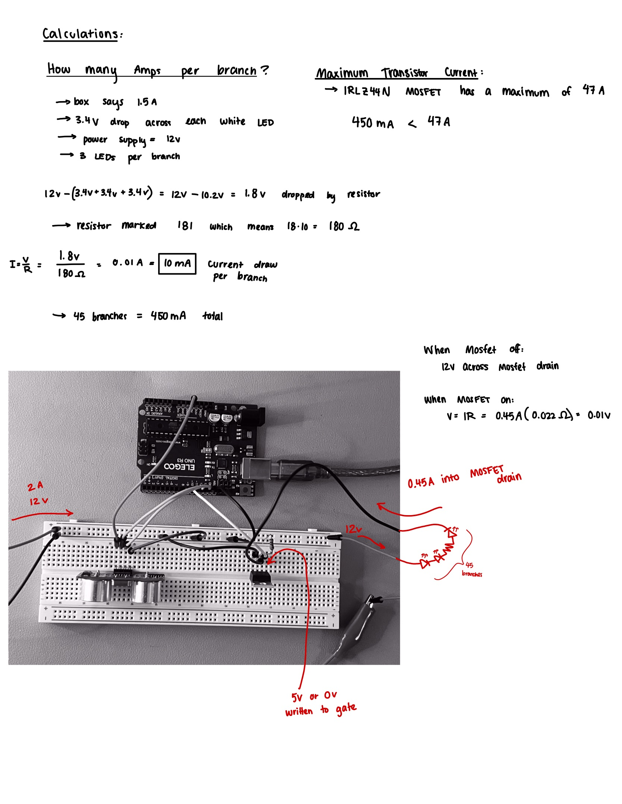

Darby's A5 Higher Voltage Assignment
Schematic
This is a schematic of the circuit that I built for this project. The ultrasonic sensor is connected to the 5v, ground, and pins 12 and 13 on the Arduino.
The LED strip is connected to the 12V power supply, ground, and the drain of the MOSFET transistor. The source of the MOSFET transistor is
connected to ground, and the gate is connected to pin 9 on the Arduino and to a 10k Ohm reisitor. The 10k Ohm resistor is also connected to ground, creating a pull-down resistor.
This ensures that any voltage that is not being written to the gate of the transistor will be sent to ground, which keeps the LEDs off when we want them to be off.

These are the calculations that I used to determine the voltages and currents at crucial spots in the circuit. I calculated that there would be 10mA of current flowwing
across each branch of the LED strip, and since there are 45 branches, there would be 450mA of current flowing through the MOSFET transistor (from drain to ground).
I also calculated that the voltage drop across the 180 Ohm resistor in each branch would be 1.8V.
This means that the voltage drop across each branch would be 10.2V, which is less than the 12V power supply, so this circuit should work without any issues.
The gate of the transistor will receive a voltage of 0 or 5V.
Since I chose to only power 45 branches, with a total of 450mA, this is way less than the maximum current that the MOSFET transistor can handle, which is 47A. A transistor was
needed for this circuit because the current flowing through the LED strip (450mA) is much higher than the current that can flow through an Arduino pin, which is 40mA. Using
an external power supply with a transistor allows us to power the LED strip without damaging the Arduino.
Circuit

This is a picture of the circuit that I built on a breadboard.
I connected the barrel jack converter to the 12V power supply and to the positive strip on the breadboard, and then I connected the positive of the LED strip to the same positive strip on the breadboard.
I connected the negative of the LED strip to the drain of the MOSFET transistor, and then I connected the source of the MOSFET transistor to ground.
I connected the gate of the MOSFET transistor to pin 9 on the Arduino and to a 10k Ohm resistor, and then I connected the other end of the 10k Ohm resistor to ground.
Finally, I connected the ultrasonic sensor to 5V, ground, and pins 12 and 13 on the Arduino. This prevented any overheating issues with the Arduino.
Code
The following code was written for this assignment using the Arduino IDE:
// Include the HCSR04 library to use the distance sensor
#include <HCSR04.h>
// initialize the distanceSensor object at pin 13 and 12
UltraSonicDistanceSensor distanceSensor(13, 12); // Initialize sensor that uses digital pins 13 and 12.
// Initialize a variable for the transistor at pin 9
int transistorPin = 9;
// Initialize a variable for the starting distance
int distance = 0;
// Iniitalize a variable for the distance to be mapped
int distanceMapped = 0;
void setup () {
// We initialize serial connection to print values from sensor
Serial.begin(9600);
// Set up the transistor pin to be an Output
pinMode(transistorPin, OUTPUT);
}
void loop () {
// check distnace with the distance sensor
distance = distanceSensor.measureDistanceCm();
// print the distance in centimeters:
Serial.println("measured distance:");
// print the distance variable in centimeters:
Serial.println(distance);
// Keep the readings between 0 and 25 cm to test easy small distances
distance = constrain(distance, 0, 25);
// Map the distance to be from 0 to 255 so that the LEDs can fade in brightness
distanceMapped = map(distance, 0, 25, 0, 255);
// Print the mapped distance
Serial.println("mapped distance:");
// Print the mapped distance variable
Serial.println(distanceMapped);
// write the distance to to the transistor to change the brightness of the LEDs
analogWrite(transistorPin, distanceMapped);
// wait 500 miliseconds before checking the distance again
delay(500);
}
Video
You can access a video of my project here: https://www.youtube.com/watch?v=fAEzNgHhOuY
If I were to complete this assignment again, I would have powered the entire LED strip using the 12V power supply rather than 45 branches.
Questions
Read the text on your mosfet to see which one you have. For your mosfet, what is the absolute maximum amount of current between pins 2 and 3?
I have the IRLZ44N transitor. The absolute maximum amount of current between pins 2 and 3 for the IRLZ44N MOSFET transistor is 47A. This can be seen on the datasheet
under the "Absolute Maximum Ratings" section, under "Continuous Drain Current, Vgs at 10V".
2: Draw a schematic for a circuit with using at least your arduino, a DC motor, and a flyback diode.
Find parts with datasheets you could use for each of these schematic components.
The schematic above shows a circuit with a DC motor and a flyback diode.
A datasheet for a 3 - 6V DC motor can be found here: link to DC motor datasheet
A datasheet for the flyback diode can be found here: link to flyback diode datasheet
3: Here is the datasheet for the L293D chip: https://www.ti.com/product/L293D.
Draw a schematic using at least your arduino, this chip, and two motors. Write (pseudo) code that shows how you would move the motors both forward,
both back, then one forward one back, and one back then forward.
Schematic:
Pseudo code:
void setup() {
pinMode(7, OUTPUT); // Motor 1 enable pin 1 on L293D
pinMode(6, OUTPUT); // Motor 1 direction pin 2 on L293D
pinMode(5, OUTPUT); // Motor 1 direction pin 7 on L293D
pinMode(11, OUTPUT); // Motor 2 enable pin 9 on L293D
pinMode(10, OUTPUT); // Motor 2 direction pin 10 on L293D
pinMode(9, OUTPUT); // Motor 2 direction pin 15 on L293D
DigitalWrite(7,HIGH);
DigitalWrite(11,HIGH);
}
void loop() {
digitalWrite(6,HIGH);
digitalWrite(5,LOW);
digitalWrite(10,HIGH);
digitalWrite(9,LOW);
delay(100);
digitalWrite(6,LOW);
digitalWrite(5,HIGH);
digitalWrite(10,LOW);
digitalWrite(9,HIGH);
delay(100);
// forward then back
digitalWrite(6,HIGH);
digitalWrite(5,LOW);
digitalWrite(10,LOW);
digitalWrite(9,HIGH);
delay(100);
// back then forward
digitalWrite(6,LOW);
digitalWrite(5,HIGH);
digitalWrite(10,HIGH);
digitalWrite(9,LOW);
delay(100);
}
Did you use AI tools in completing this assignment? If yes, please provide details on how/when,
as well as a brief reflection. If no, you can either leave this question blank, or provide other information if you'd like.
No, I did not use AI tools in completing this assignment.